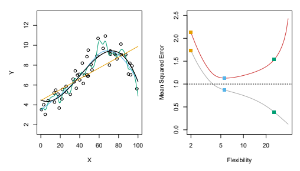

import pandas as pd
from sklearn.pipeline import Pipeline
from sklearn.linear_model import LinearRegression
from sklearn.metrics import r2_score12 Model Validation
12.1 Introduction
This document discusses modeling via multiple linear regression, and the tools in pandas and sklearn that can assist with this. We will expand on our previous content by diving deeper into model evaluation.
Note
If you do not have the sklearn library installed then you will need to run
pip install sklearn
in the Jupyter/Colab terminal to install. Remember: you only need to install once per machine (or Colab session).
12.2 Machine Learning Mission
Recall that in machine learning our goal is to predict the value of some target variable using one or more predictor variables. Mathematically, we we’re in the following setup
\[y = f(X) + \epsilon \]
where \(y\) is our target variable and \(X\) represents the collection (data frame) of our predictor variables. So far we’ve discussed tackling this via multiple linear regression.
12.3 Multiple Linear Regression
Recall that we’ve discussed the following model specification:
\[y = \beta_0 + \beta_1 X_1 + \beta_2 X_2 + \cdots + \beta_p X_p + \epsilon\]
where \(X_j\) (\(j = 1,...,p\)) can represent any type of predictor (or transformed predictor) variable in our dataset.
For most of our machine learning methods we’ll want to include every variable in our dataset that we consider a predictor. So, multiple linear regression is also our way of setting the stage for the rest of our machine learning journey. Dataset preparation for other machine learning methods will mostly be the same as we’ve discussed for multiple linear regression (e.g. dummifying categorical variables, standardizing quantitative variables, etc.).
Is your multiple regression model good?!
We discussed before that we could compute the Mean Squared Error as one particular metric of interest. However, the magnitude of the value of the mean squared error for a single model specification is meaningless. There is no universal threshold to compare this value to.
One metric that does have more standardized values is R-squared, the coefficient of determination. This metric takes value between 0 and 1, with values closer to 1 indicating a better fit.
12.4 Model Evaluation
Evaluating the quality of a model can be complex, but it’s been well studied. As standardized as R-squared is as a metric for a model, it suffers from at least one weakness:
- It is mathematically guaranteed to stay the same or increase in value if we add terms (predictors) to the model.
This is essentially saying that any new variable can’t make the model any worse; it can add zero or more information, but not “negative information”. We generally don’t want to arbitrarily add predictors to our model. Bigger and more complex models are often more computationally costly, harder to interpret (if at all), and more likely to overfit our data.
But wait…aren’t we supposed to be computing metrics and evaluating our models on test data?! Yes!
This guarantee about the value of R-squared never decreasing is only true if computed on the training data.
Note
Recall…
To choose between our model specifications, we will need some training data for fitting the models, and some test data for computing the metrics. How will we get two separate datasets? Easy, we’ll just split up the one dataset we already have!
from sklearn.model_selection import train_test_split
X_train, X_test, y_train, y_test = train_test_split(X, y, test_size=0.25)With our training and testing datasets established, we’re ready to fit our models on the training data and then make predictions on the test data!
Once we have predictions on the test data we need to decide on one or more metrics to use to compare our candidate models.
No matter what metrics you happened to identify, a few popular choices are:
- Root Mean Squared Error (RMSE)
- Mean Absolute Error (MAE)
- R-Squared
All of these metrics have corresponding functions in sklearn.
12.4.1 Under/Overfitting
Do you think your full model for bill_depth_mm underfit the data? Overfit? Was just fine? How do we even tell?!
Note
In general, we will organize a short list of model specifications that we want to explore and then compute the value of our metrics for each, on our test dataset. The “winner” is the one with the best values of the metrics on our test data.
But how do we assess underfit and overfit when we can’t visualize our data and model as easily like we did previously with our polynomial regression models…?
The hope is that we can evaluate complex models in the following way:

12.4.2 Suspiciously Good
Suppose we fit a model to our training data and apply it to our test data and obtain extremely low values for both the training and the test error metrics…
Of course we want our models to do well, but it’s actually fantastic to have intuition that model performance on the test dataset is suspicious if it’s seemingly too good.
A few things to check in this situation:
Review all of your code to make sure your
Xdataframe didn’t include the target variable (y) as wellCheck to see if any of your predictor variables are “surrogates” (or superficially associated with) for your target variable (
y)